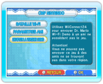
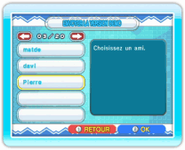
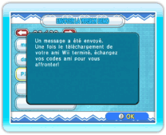
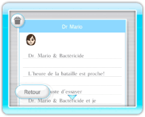

20 |
Envoyer la version démo (Dr. Mario) |
 |
Vous pouvez envoyer une version démo du jeu à des amis n’ayant pas acheté Dr. Mario & Bactéricide. Avant l’envoi, assurez-vous que WiiConnect24 est correctement paramétré (voir "Utiliser WiiConnect24"). NOTE: la version démo ne peut être utilisée que pour des batailles en ligne contre un ami ayant la version complète du jeu. Si les deux joueurs ont la version démo, il sera impossible de jouer. Vous aurez besoin de votre code ami pour envoyer la version démo. Vous pouvez consulter votre code ami en sélectionnant CWF NINTENDO à l’écran de choix du mode, puis PARAMETRES AMI et enfin CONFIRMER VOTRE CODE AMI. ● Envoyer la version démo 
A l’écran de choix du mode, choisissez CWF NINTENDO pour afficher le menu CWF Nintendo et sélectionnez ENVOYER LA VERSION DEMO. 
Lorsque votre carnet d’adresses s’affiche, choisissez l’ami Wii à qui vous souhaitez envoyer la version démo, puis sélectionnez OUI pour confirmer. 
Une fois la version démo envoyée, une confirmation s’affichera. NOTE: vous ne pouvez pas envoyer ce jeu à des amis ne se trouvant pas dans votre région, ou à des amis Wii n’ayant pas de code Wii. 
● Recevoir la version démo Une fois la version démo envoyée, votre ami recevra un message sur son bureau Wii. Après avoir lu le message, votre ami pourra choisir de démarrer le téléchargement. A la fin du téléchargement, votre ami devra obtenir un code ami dans le jeu, et vous devrez ensuite enregistrer vos codes ami (voir "Paramètres ami"). Pour faire une partie contre votre ami, allez au menu principal de Dr. Mario, choisissez CWF NINTENDO pour accéder au menu CWF Nintendo. Choisissez ensuite BATAILLE Wi-Fi puis INVITER UN AMI et sélectionnez l’ami que vous voulez affronter. NOTE: seule la personne possédant la version complète de Dr. Mario & Bactéricide peut inviter l’autre personne. Les paramètres et les résultats ne seront pas sauvegardés. |
 |
 |